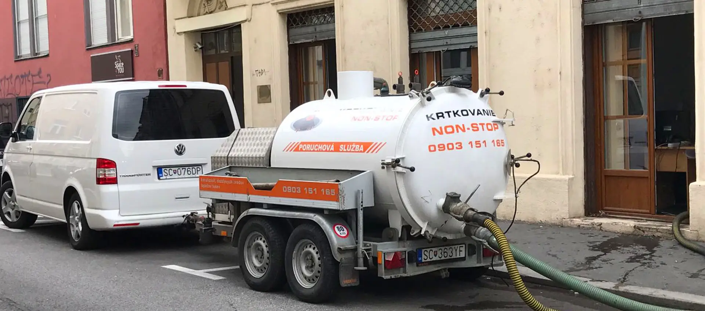

Krtkovanie odpadov
Elektromechanické čistenie upchatých odpadov v dome alebo byte — WC, umývadlo, drez, vaňa, stupačka či dažďový zvod.
- Potrubia s priemerom 50–150 mm
- Čistenie do dĺžky 25 metrov
- Rôzne pružiny a hlavice podľa potrubia
Krtkovanie, čistenie kanalizácie a presná diagnostika potrubia pre byty, domy aj prevádzky. Opíšte nám problém a vyberieme vhodnú techniku.
Každý zásah začína krátkou konzultáciou. Podľa potrubia a typu problému zvolíme vhodný postup a techniku.
Elektromechanické čistenie upchatých odpadov v dome alebo byte — WC, umývadlo, drez, vaňa, stupačka či dažďový zvod.
Silný prúd vody odstraňuje mastnotu, vodný kameň, usadeniny aj korene tam, kde mechanické krtkovanie nestačí.
Kamerou zistíme miesto a príčinu poruchy bez zbytočného rozkopávania potrubia alebo odstavenia systému.
Vyprázdnenie a vyčistenie lapačov tukov pre reštaurácie, kuchyne, vývarovne a potravinárske prevádzky.
Špeciálnym prístrojom na princípe rádiolokačnej techniky určíme trasu kanalizácie aj jej hĺbku.
Telefonicky s vami prejdeme situáciu a vyberieme vozidlo aj techniku vhodnú pre konkrétny zásah.
Zavolať 0903 151 165
Firma disponuje mobilnou elektromechanickou technikou, vozidlami do nízkych vjazdov aj veľkým kombinovaným vozidlom na tlakové čistenie a odsávanie.
Pri havárii nemusíte poznať odborné názvy. Stačí povedať, čo sa deje a kde.
Poviete nám miesto, typ objektu a čo presne neodteká alebo sa opakuje.
Podľa problému zvolíme konkrétne vozidlo, zariadenie a vhodný postup.
Potrubie spriechodníme, vyčistíme alebo skontrolujeme kamerou podľa dohody.
Ako sa určuje cena? Závisí od typu a priemeru potrubia, miery znečistenia, náročnosti a počtu čistených metrov. Firma ju určí po telefonickej konzultácii alebo obhliadke.
Upchaté WC, umývadlá, drezy, vane, stupačky, kanalizácie a dažďové zvody.
Administratívne objekty, obchodné a nákupné centrá vrátane nízkych vjazdov.
Reštaurácie, bary, kuchyne, vývarovne a prevádzky s lapačmi tukov.
Referencie prevzaté z pôvodného webu firmy.
„Bolo úžasné sledovať, ako ‚jednotka rýchleho nasadenia‘ skrotila to voňavé prekvapenie, ktoré na nás čakalo po návrate z výletu. Oceňujem rýchly a profesionálny zásah.“
„Najprv som upchatý odtok riešil sám. Problémy sa však často vracali. Obrátil som sa na PK krtkovanie a moje niekoľkomesačné trápenie v priebehu pol hodiny odstránili. Ďakujem.“
Pôvodný web uvádza tieto okresy a mestá. Dostupnosť výjazdu pre konkrétnu adresu si overte telefonicky.
Overiť dostupnosť výjazduBratislava I–V, Malacky, Pezinok, Senec
Piešťany, Senica, Skalica, Trnava
Komárno, Levice, Nitra, Nové Zámky, Šaľa, Topoľčany, Zlaté Moravce
Ak odpoveď nenájdete, nonstop linka je najrýchlejšia cesta ku konkrétnej rade.
0903 151 165Áno. Firma na pôvodnom webe uvádza pohotovosť 24 hodín denne, 7 dní v týždni a počas celého roka.
Cena závisí od typu, priemeru a stavu potrubia, miery znečistenia, náročnosti a počtu vyčistených metrov. Určuje sa po telefonickej konzultácii alebo obhliadke.
Najmä pri silnom zanesení mastnotou, vodným kameňom či usadeninami, keď mechanické čistenie pružinou nestačí. Vhodný postup potvrdí technik podľa situácie.
Pomáha identifikovať a lokalizovať poruchu, skontrolovať stav potrubia, prípojku a spoje bez zbytočného rozkopávania.
Pripravte si adresu, typ objektu a stručný opis problému — napríklad čo neodteká, či sa problém opakuje a či je priestor zatopený.
Ukážkový formulár Odosielanie zatiaľ nie je pripojené. Pre reálny dopyt použite telefón alebo e-mail.